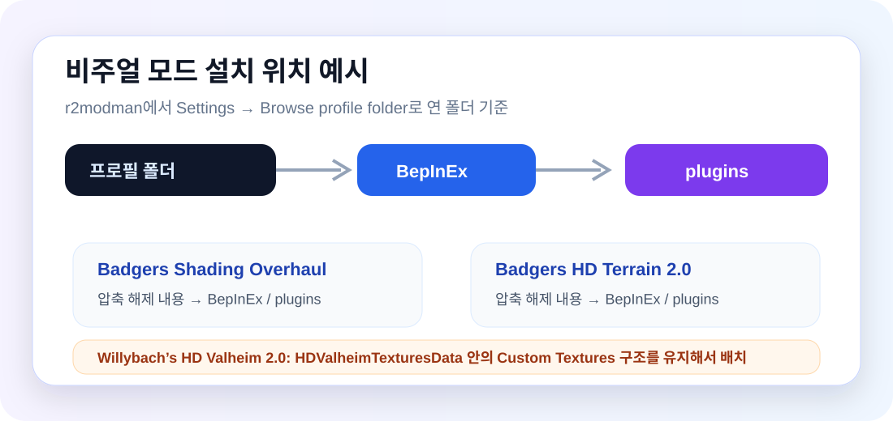

Valheim 1회 실행
Steam에서 발헤임을 한 번 실행해 기본 폴더를 생성합니다.
Valheim Dedicated Server Guide
적용 모드가 확정된 config.zip 기준으로 정리했습니다. 일반 유저는 r2modman 프로필 코드를 가져와 한 번에 맞추면 됩니다.
Profile Code
넬이 공유한 코드를 아래 영역에 넣어두면 유저가 바로 복사해서 Import 할 수 있습니다.
여기에 r2modman 프로필 코드를 입력하세요수정 위치: index.html에서 위 문구를 실제 프로필 코드로 교체하면 됩니다.
Install Flow
기능 모드는 개별 검색 설치가 아니라, 프로필 코드를 가져오는 방식으로 맞춥니다.
Steam에서 발헤임을 한 번 실행해 기본 폴더를 생성합니다.
Thunderstore에서 r2modman을 설치하고 실행합니다.
Valheim Dedicated Server가 아닌 Valheim을 선택합니다.
프로필 화면에서 Import / Update를 클릭합니다.
Import new profile에서 From code를 선택하고 공유받은 프로필 코드를 붙여넣습니다.
모드 설치가 끝나면 Steam이 아닌 Start modded로 실행합니다.
Visual Patch Links
계절 관련 모드는 현재 별도 비주얼 안내에서 제외하고, Nexus 별도 설치 항목은 아래 3개만 남겼습니다.
긴 경로를 직접 입력하지 말고, r2modman에서 Settings → Browse profile folder로 프로필 폴더를 연 뒤 이미지 흐름대로 배치하세요.

Mod Details
모드 아이콘, 역할, 실제 설정 기반 유저 체감을 카드로 정리했습니다.
현재 업로드된 config.zip 기준으로 카드가 구성되었습니다. server_devcommands.cfg는 관리자용으로 제외했습니다.
검색 결과가 없습니다.
Troubleshooting
적용에 어려움이 있다면 넬에게 문의하세요!